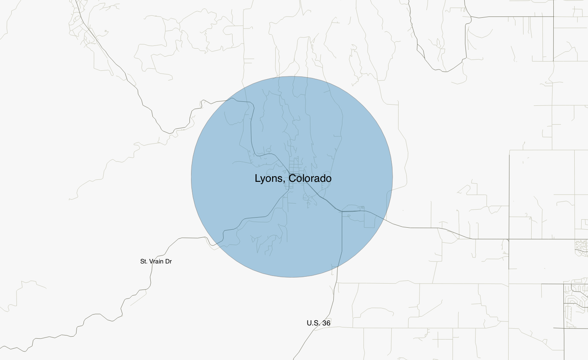
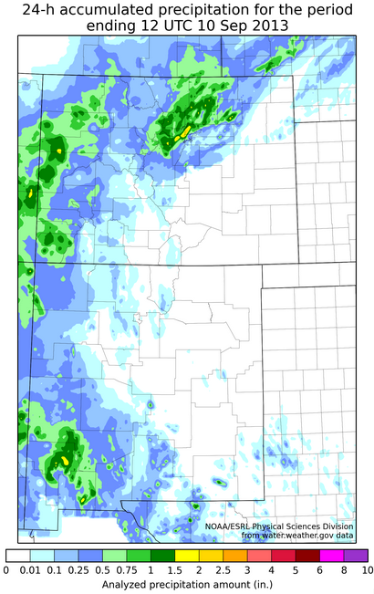
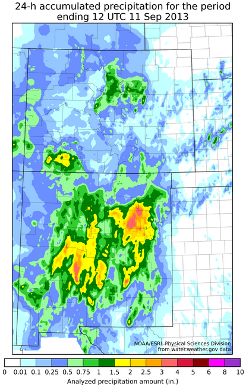
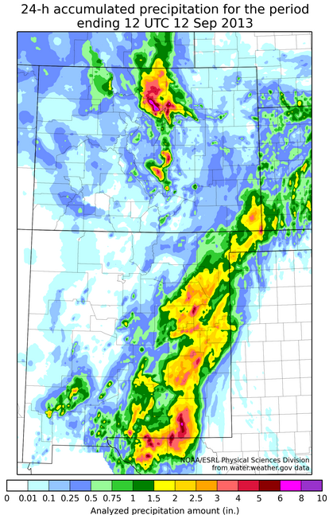
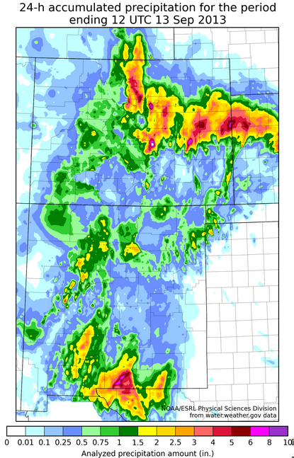
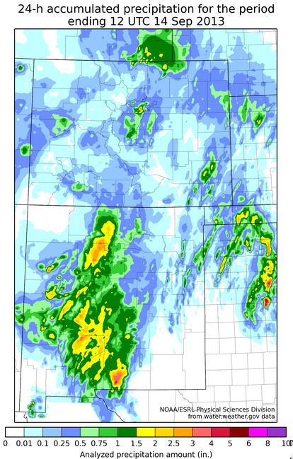
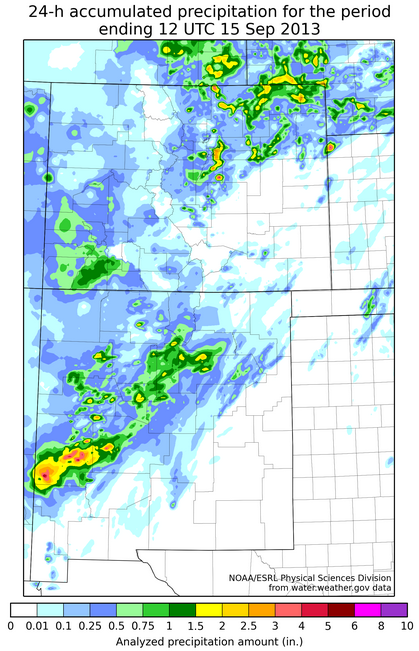
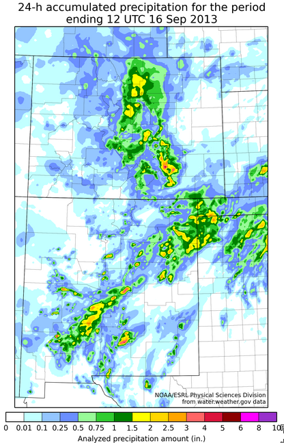

September 2013 was Colorado's wettest month on record, an incredible 2.7" above average state-wide. Most of the precipitation that fell occcurred over a 7 day stretch between September 9, 2013 to September 16, 2013 across northeast Colorado and the Front Range.
Many communities along the Front Range experienced 100 year and even 1000 year flooding, which means that in any given year there is only a 1% or 0.1% chance for such an event to occur. Explore some of the communities affected by the flooding.
interactive
scroll zoom · click drag
Boulder, Colorado
Boulder was particularly hard hit during this period. CoCoRaHS storm reports ranged from 12" to 21" across the Front Range foothills of Boulder County, equivalent to a major tropical cyclone, or nearly that of an entire year's worth of precipitation for the region.
Boulder received 18.16" of precipitation in SEVEN days, or 89% of annual average
In a region accustomed to 300 days of sunshine each year, the semi-arid climate of Colorado's Front Range rarely sees consecutive days of rain in a given year. The monsoonal flow that feeds Colorado's summer storms normally comes to an end weeks before the floods occured, and predominantly produce short-lived but powerful thunderstorms. There was nothing usual about this week.
FORECAST: Boulder, CO.
40.0176° N, 105.2797° W
Monday
Tuesday
Wednesday
Thursday
Friday
Saturday
Sunday
Thursday proved to be the height of the storm for Boulder County. After days of rain, the soil had become completely saturated, but the rain did not let up. The canyons west of the city became collection basins for Mother Nature's wrath. Shortly after 11pm Thursday, September 12, a new round of flood warnings were issued for the Boulder area. Stream gauges in the canyon were indicating record surges, some signals being lost as the sensors were overtaken by water. The National Weather Service took to social media to warn:
Large wall of water, vehicles, debris coming down Emerson Gulch (4mile Canyon burn area). Go to higher ground! #boulderflood
Torrents of water washed through the streets of Boulder, while local media tried to grapple with the magnitude of the situation.
Play
Homes and roads were destroyed in Clear Creek canyon, but the extent of the damage would not be known until morning. 20 miles north of Boulder is Lyons, Colorado. The town of 2,000 was being shut off in each direction as flooding waters washed away all access roads and bridges.
Lyons, Colorado
"A town cut off"
All roads in and out of Lyons became impassable by midweek. There are just two ways into Lyons, U.S. 36 from the south, and St Vrain Dr from the southwest. The town, population of just over 2,000, became a top priority for the National Guard as roads turned to rivers and bridges were swept away. The Saint Vrain Creek roared like a mighty river, as the canyons immediately adjacent to the town became overwhelmed with runoff.

More text here for Lyons, possibly some images.
Estes Park
Historic Context
For a bit more perspective on just how much rain fell during the last week, we can take a look at climatological norms, and other historic rain events. Several places along the Front Range received a years worth of precipitation during the event, with the majority falling during a 48 hour period last Wednesday and Thursday.
Eastern Plains
Historic Context
For a bit more perspective on just how much rain fell during the last week, we can take a look at climatological norms, and other historic rain events. Several places along the Front Range received a years worth of precipitation during the event, with the majority falling during a 48 hour period last Wednesday and Thursday.
Post Deluge
"A flood of biblical proportion" - NWS Boulder







In the days and weeks that followed the flooding came a fury of post analysis from meteorologist around the country. The National Weather Service put has compiled a number of different visualizations ranging from precipitation totals maps to archived modeling. The array of images above show 24 hour rainfall totals as depicted by radar, while the animations below shows a cumulative depection of rainfall over the seven days.
Rebuilding and Community Healing
As seen over and again after disaster strikes, the good will of community members helping one another has been truly remarkable. From local responders to the National Guard, to fellow Coloradans, the response has been something.
Overpasses lay in ruin outside Lyons, CO one month after floods